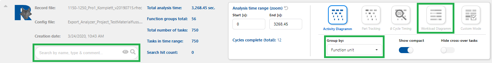
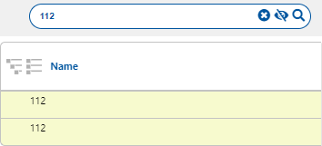
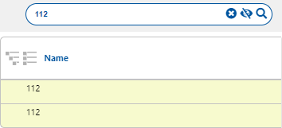

Process Analysis
Im Bereich der Prozessanalyse stehen mehrere Module zur Verfügung, um den Ablauf innerhalb einer Zelle untersuchen zu können. Bei diesen Modulen handelt es sich um ein Aktivitätsdiagramm, Teiledurchlauf, durchschnittliches Taktzeitdiagramm und ein Auslastungsdiagramm sowie einen Kunden-Modus, in dem der Anwender selbst die Möglichkeit hat, interessierende Aspekte zusammenzustellen. Grundlage für alle Analysen ist das Vorhandensein einer Aufnahme oder einer Ergebnisdatei. Eine Ergebnisdatei selbst wurde unter Anwendung einer Aufnahme erstellt und zur Verfügung gestellt. Um eine Analyse zu starten, gibt es demnach zwei Möglichkeiten: 1) Laden einer Aufnahme zusammen mit einer passenden Konfigurationdatei. 2) Laden einer Ergebnisdatei.
Anzeigenbereich
Der Anzeigenbereich der Process Analysis ist in verschiedene Bereiche gegliedert (siehe auch Oberfläche), die im Einzelnen in den folgenden Abschnitten beschrieben sind. TODO: Bild des Process Analysers in dem die Namen der verschiedenen Bereiche eingetragen sind.
Grosse Informationskopfzeile
Die große Informationskopfzeile gliedert sich in drei Bereiche: links und grau unterlegt Informationen zum geladenen File, darunter eine Freitextsuche mit Filterelementen und rechts ein Funktionsbereich mit Buttons und weiteren Funktionselementen.
Die Informationen im grauen Bereich umfassen:
-
Record file: In dem Feld wird der Name der geladenen Rekord Datei angezeigt. Diese wird über den Menüpunkt Process Analysis, über Analyse der RF::SCOUT Anwendung geladen. Wird eine Analyse als Result gespeichert wird der Name der Record Datei mit in das Result gespeichert und beim Laden eines Results angezeigt. Über diese Angabe ist ersichtlich aus welcher Record Datei die Anzeige erstellt wurde.
-
Config file: In dem Feld wird die geladene Config Datei angezeigt. Diese wird über den Menüpunkt Process Analysis, über Load Result der RF::SCOUT Anwendung geladen. Wird eine Analyse als Result gespeichert wird der Name der Config Datei mit in das Result gespeichert und beim Laden eines Results angezeigt. Über diese Angabe ist ersichtlich welche Config Datei der Analyse zu Grunde liegt.
-
Creation date: In dem Feld wird das Erstellungsdatum der Analyse angezeigt. Es ist nicht das Speicherdatum einer Result Datei. Dieses Wird in der RF::SCOUT Anwendung nicht angezeigt.
-
Total analysis time: In dem Feld wird die Zeitspanne in Sekunden der kompletten Record Datei angezeigt. Dieser Wert wird zudem im Feld "End [s]" der "Analysis time range (zoom)" als Maximaler Wert berücksichtigt.
-
Function groups total: In dem Feld wird die Anzahl der Funktionsgruppen angezeigt, die in dem Analysezeitraum liegen. Die Anzahl wird somit durch die Angaben in der "Analysis time range (zoom)" beeinflusst. Zudem wird der Wert durch die Option "Hide cross-over Task" beeinflusst. Die maximale Anzahl der Funktionsgruppen ist die Anzahl, der in der Rekord Datei vorhandenen Funktionsgruppen.
-
Total number of tasks: In dem Feld wird die Anzahl der Task angezeigt, die in der Rekord Datei vorhandenen sind.
-
Task in time range: In dem Feld wird die Anzahl der Task angezeigt, die in dem Analysezeitraum liegen. Die Anzahl wird somit durch die Angaben in der "Analysis time range (zoom)" beeinflusst. Die maximale Anzahl der Task ist die Anzahl, die in der Rekord Datei vorhandenen Task.
-
Search hit count: In dem Feld wird die Anzahl der über das Suchfeld gefundenen Einträge Angezeigt.

Kleine Informationskopfzeile
In der kleinen Informationskopfzeile sind die Buttons links in der Buttonspalte und die eingeklappte Kopfzeile zeigt nur die wesendlichen Informationen.
- Search hit count siehe (Grosse Informationskopfzeile),
- Record file siehe (Grosse Informationskopfzeile) und
- Creation date siehe (Grosse Informationskopfzeile).

Tabelle
Die Tabelle zeigt die geladenen Elemente mit den Feldern "Name", "Checkbox", "# Tasks", "∅ Time [s]", "Min. Time [s]", "Max. Time [s]", "Type", "Function unit"" und "Comment". Siehe hierzu auch Einheiten und Bezeichner.
Der Inhalt der Tabelle wird durch Auswahl des "Workload Diagram" Buttons sowie den Feldern "Search" und "Group by" beeinflusst.

Workload Diagram


Der Button aktiviert das Workload Diagram. Es zeigt alle Aktivitäten an, die in einer Analyse oder einer geladenen Ergebnis Datei vorhanden sind. Die Anzeige ist identisch mit dem Ablaufdiagramm. Die Tabelle wird um die Spalte "Workload Process" erweitert, die die Auslastung pro Takt anzeigt. Wird auf eine Workload Process Diagramm mit der aktiven Maustaste gedrückt, wird das Workload Process Diagramm vergrößert dargestellt.
Ist die Zeitskala durch den "Analysis time range (zoom)" zu klein gewählt kann der Spalteneintrag Workload Process leer sein.
Suchfeld
Das Suchfeld bezieht sich auf die Elemente einer angezeigten Tabelle. Generell stehen im Suchfeld als Platzhalter die Spaltenbezeichnungen, die bei einer Suche berücksichtigt werden. Im gezeigten Beispiel sind es die Tabellenspalten "Name", "Type" und "Comment".
Sobald eine Eingabe getätigt wurde erscheint, im Suchfeld das Remove Icon . Wird das Icon gedrückt, wird der eingegebene Suchbegriff gelöscht. Siehe hierzu auch Icon.

Das Suchfeld ist so konzipiert, dass eine Suche erst von der Anwendung gestartet wird wenn 2 Sekunden keine Aktion im Suchfeld selbst getätigt wurde. Man kann die Suche aber auch selbst auslösen, indem man "Return" drückt. Im Suchergebnis werden Ttreffer mit gelber Hintergrundfarbe angezeigt. Elternelemente werden auch angezeigt, wenn der Suchbegriff nicht in deren Bezeichner enthalten ist.
Ist das Icon aktiv, werden alle gefundenen Elemente mit deren Elternelemente bzw. Group-by-Elementen angezeigt. Ist das Icon aktiv, sind die Elternelemente ausgeblendet, die den Suchbegriff nicht beinhalten. Siehe hierzu auch Icon.
 

In dem readonly Feld "Search hit count:", welches sich neben dem Suchfeld in der Informationskopfzeile befindet, wird die Anzahl der gefundenen Einträge angezeigt.
Suchbegriff
- Groß- und Kleinschreibung wird nicht berücksichtigt.
- Als Platzhalter für einen Suchbegriff gelten
- "*" (Sternchen) Das Sternchen ersetzt kein oder beliebig viele Zeichen.
- "?" (Fragezeichen) Das Fragezeichen ersetzt ein Zeichen.
- Als logische Verknüpfung zweier Suchbegriffe gilt
- "|" (Senkrechte Strich) der senkrechte Strich wird als ODER verwendet.
Group by
Das Group by Feld bezieht sich auf die Elemente der angezeigten Tabelle. Im Group by Feld stehen Auswahlmöglichkeiten zur Verfügung, um die Tabelleneinträge zu Gruppieren. Die Auswahlmöglichkeiten sind somit immer auch Spalten in der Tabelle.
Sobald eine Auswahl getätigt wurde, werden die Tabelleneinträge nach dieser Auswahl gruppiert und in der ersten Tabellenspalte mit angezeigt.
Z.B. Group by "Function unit"
Es erscheinen in der ersten Tabellenspalte das Icon bzw. . Mit diesen Icons können einzelne Gruppierungen ein- und aufgeklappt werden. Siehe hierzu auch die Icons.
In der Kopfzeile erscheinen zudem die Buttons
 und

Wird eine Redorcing- oder Ergebnisdatei geladen, wird bei der initialen Darstellung die Gesamtdauer der Aufzeichnung dargestellt. Aktivitäten der Start- beziehungsweise Endezeitpunkt nicht im Recording liegen, werden in der eine hellere Zeichnung und durch eine gestrichelte Umrandung unterschieden. Das dargestellte Intervall kann über das Drücken der Umschalttaste und zeitgleichem Bedienen des Mausrads verkleinert beziehungsweise vergrößert werden. Der Mauszeiger muss sich dabei über dem Chart befinden. Wird die Umschalttaste zusammen mit der primären Maustaste gedrückt, kann der ausgewählte Bereich horizontal verschoben werden. Der jeweils ausgewählte Zeitbereich wird in der Zeitskala angezeigt. Die zeitliche Auflösung ändert sich dabei automatisch. Der darzustellende Bereich kann auch durch die Felder der "Analysis time range (zoom)",
- "Start [s]",
- "End [s]" gewählt werden.
Über die "Display options", erreichbar über das Zahnradsymbol am rechten Rand, können weitere Informationen eingeblendet werden:
- "Show heartbeat timestamp", zeigt den Zeitpunkt des Beginns eines neuen Taktes an
- "Show cycle lengths" zeigt die Dauer zwischen zwei aufeinander folgenden Heartbeats
Hat man mit der Zoom- oder Verschiebefunktion einen anderen Bereich gewählt als durch die Analysis time range vorgegeben, kann mit dem Button "1:1" wird wieder auf diesen zurückgesetzt werden.
Die Auswahl des Moduls "∅ Cycle Timing" wirkt sich insofern auf die Zeitskala aus, dass die Geamtdauer von der Taktlänge bestimmt wird.

Analysis time range
Über die Einstellung des Analysis time range kann der darzustellende Zeitbereich über die Felder "Start [s]:" und "End [s]:" gewählt werden. Die Zeitangabe erfolgt in Sekunden. Das Eingabeformat ist
####.##
Der minimal Wert der eingegeben werden kann ist der minimalste Startwert eines geladenen Task. Der maximal Wert der eingegeben werden kann ist der maximalste Endwert eines geladenen Task.
Refresh Icon
Das Icon setzt eine Eingabe eines Zeitbereichs zurück auf den Ausgangszustand und es wird der gesamte Zeitbereich angezeigt.
Display options
Display Options finden sich an zwei Stellen. Zum einen können "Show compact" und "Hide cross over tasks" direkt über einen Schieberegler in der ausgeklappten Kopfinformationszeile ausgewählt werden.
Zudem sind diese und weitere Einstellungen über das Setting Icon in der rechten oberen Ecke der Zeitskala möglich.

Hide cross-over tasks
Die Option "Hide cross-over tasks" blendet Aktivitäten aus, die sich über mehrere Takte erstrecken. Hierzu geören unter anderen Aktivitäten von Lineareinheiten oder Wechselvorrichtungen. Solche Aktivitäten sind nicht regelmäßig mit dem Takt assoziiert sondern werden zum Beispiel durch einen Typwechsel ausgelöst.
Ausgeschaltet
Angeschaltet
Show heartbeat timestamps
Die Option "Show heartbeat timestamps" blendet den sogenannten Herzschlag der Aufzeichnung ein. Hierbei muss bei der Aufzeichnung eine Station mit bzw. als Herzschlag definiert worden sein. (@TODO Verweis)
In der Anzeige sind es rote vertikale Linien, die mit der Taktzeit in Sekunden angezeigt werden.
Ausgeschaltet
Angeschaltet
Show cycle lengths
Die Option "Show cycle lengths" blendet die sogenannten Herzschlaglänge der Aufzeichnung an. Hierbei muss bei der Aufzeichnung eine Station mit bzw. als Herzschlag definiert worden sein. (@TODO Verweis)
In der Anzeige sind es rote horizontale Pfeil-Linien die mit der Herzschlaglänge in Sekunden angezeigt werden.
Ausgeschaltet
Angeschaltet
Show Compact
Die Option "Show compact" zeigt entweder alle Tasks in einer Zeile oder jeden Task in einer extra Zeile an.
Ausgeschaltet
Angeschaltet
Die Show compact Option gruppiert (siehe Group by) die Tabelle technisch somit nach Tasks.
Besonderheiten
Task mit einer Länge 0 werden als kleine Raute dargestellt, da Balken mit einer Länge 0 nicht erkannt werden würden.
Buttons
In der Activity Diagram Ansicht werden die Takte angezeigt.
Interpretation der Activity Diagram Anzeige
Interpretation der Part Tracking Anzeige
In der Average Cycle Ansicht werden die durchschnittliche Taktzeit sowie die durchschnittliche relative Lage der Aktivitäten aller gefilterten Elemente zum Takt angezeigt. 1
Die folgende Abbildung zeigt ein nahezu ideales Ergebnis einer Taktzeitanalyse.
Interpretation der Durchschnittstaktzeit
Im gezeigten Beispiel dient das Signal des Rollenförderers 030RF_001 als Heartbeat Signal. Genau genommen ist es der Zeitpunkt, zu dem dieser Rollenförderer seine Aktivität beginnt. Der Heartbeat ist immer ein Zeitpunkt und keine Zeitspanne. Dieser Zeitpunkt definiert den Beginn eines Taktes und ist als blau-gestrichelte, vertikale Line dargestellt. Per Definition liegt diese Linie beim Zeitpunkt 0 s. Zusätzlich zur blauen Linie sind noch drei rot gestrichelte, vertikale Linien gezeigt. Die erste gibt Dauer und Lage des kürzesten, die mittlere des durchschnittlichen und die dritte des längsten Taktes an. Die blauen horizontalen Balken zeigen die durchschnittliche Dauer der Aktivität der dargestellten Komponenten an.
Warum gibt es einen negativen Zeitbereich? Die Stationen der betrachteten Zelle bewegen ein Teil strikt linear von Station zu Station. Station 030 definiert den Zeitpunkt 0. Damit Station 030 ein Bauteil an Station 040 übergeben kann, muss Station 040 das Bauteil aus dem vorangegangen Takt weitergegeben haben und muss somit vor Station 030 aktiv sein. Dieser zeitliche Vorlauf wird durch negative Zeiten für alle Stationen ausgedrückt, die in der Abfolge nach der Station 030 liegen, die das Heartbeat Signal stellt. Der Rollenförderer aus Station 040 beendet seine Aktivität unmittelbar vor Beginn des neuen Taktes und nimmt damit signifikanten Einfluss auf die Dauer eines Taktes.
Warum gibt es eine Lücke zwischen dem Ende der Roboteraktivitäten und dem Beginn des nächsten Taktes? In der Abbildung ist das durchschnittliche Ende der Roboteraktivitäten durch das Ende des Balkens zu Roboter 030_RB300 (Sekunde 145.95) und der Beginn des nächsten Taktes durch die durchschnittliche Taktdauer markiert (Sekunde 170.066). Das entspricht einer Lücke von durchschnittlich circa 24 Sekunden oder 14 %. Wie im letzten Absatz beschrieben, muss Rollenförder 030RF_001 auf den Rollenförderer aus Station 040 warten. Rollenförderer 040RF_001 wiederum wartet auf den Rollenförderer aus Station 050. Zumindest in der Durchschnittsbetrachtung ist dieser 52 Sekunden vor Beginn der Aktivität von 040RF_001 fertig und größer als die Lücke von 24 Sekunden. Hieraus lässt sich ein Optimierungspotential von bis zu 14 % zur Verkürzung der Taktdauer ableiten, indem Rollenförderer 040RF_001 früher gestartet wird.
Erläuterung zur Aktivitäten-Selektion
In der Zelle gibt es Komponenten, die nicht im Takt aktiv sind. Sie sind entweder nur ab und an aktiv oder zeigen eine Aktivität, die sich über viele Takte erstreckt. Hierbei handelt es sich zum Beispiel um Lineareinheiten oder Wechselvorrichtungen, die bei einem Typwechsel zum Einsatz kommen. Diese können durch einen besonderen Filter "Hide cross-over tasks" aus der Aktivitätsliste entfernt werden. Dies wird am Beispiel von Station 031 in den folgenden beiden Abbildungen gezeigt. Die erste Abbildung zeigt cross-over Tasks, in der zweiten sind sie ausgeblendet.
Weiterhin kann man die Freitextsuche (Suchfeld) verwenden, um die Liste der angezeigten Komponenten einzuschränken und so eine fokussierte Betrachtung ermöglichen. Dies wird verstärkt, in dem man über das Icon :fa-eye: :fa-eye-slash: die Stationen ebenfalls ausblendet. Die folgende Abbildung zeigt eine ungefilterte Darstellung. Diese ist wesentlich unübersichtlicher als die weiter oben im Abschnitt gezeigt durchschnittliche Taktzeitanalyse.
Maus
Befindet sich der Mauszeiger über dem Chartbereich inklusive Skala und wird das Mausrad mit gleichzeitiger gedrückter ++Shift++ Taste gedreht, wird hineingezoomt bzw. herausgezoomt. Wird die Maus mit gedrückter primärer Maustaste und gleichzeitig gedrückter ++Shift++ Taste bewegt, wird die Zeitskala verschoben. Ein verschieben ist nur möglich, wenn vorher hineingezoomt wurde.
Wird das Mausrad mit gleichzeitiger gedrückter ++Strg++ Taste gedreht, wird die Anwendung vom Browser vergrößert bzw. verkleinert.
-
Hinweis zur Berechnung: Zu jedem Takt wird die relative Lage einer Aktivität ermittelt, d.h., die Lage und Daier einer Aktivität wird auf die jeweilige Taktdauer normiert. ↩